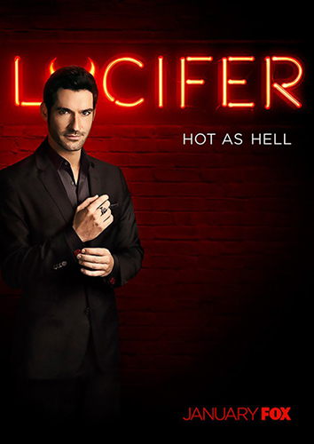

Lucifer
Entediado com a vida nas trevas, o diabo se muda para Los Angeles, abre um piano-bar e empresta sua sabedoria a uma investigadora de assassinatos.
Ver análise
Loki
Começando imediatamente depois que Loki rouba o Tesseract (de novo), ele se encontra diante da Autoridade de Variação Temporal, uma organização burocrática que existe fora do tempo e espaço. Forçado a responder por seus crimes contra a linha do tempo, ele recebe uma escolha: Ser deletado da realidade ou ajudar a capturar uma ameaça ainda maior.
Ver análise
Sweet Tooth
Baseada na adorada HQ da DC e com produção executiva de Susan Downey e Robert Downey Jr., Sweet Tooth é um conto de fadas pós-apocalíptico sobre um menino-cervo e um nômade solitário que embarcam juntos em uma aventura extraordinária.
Ver análise